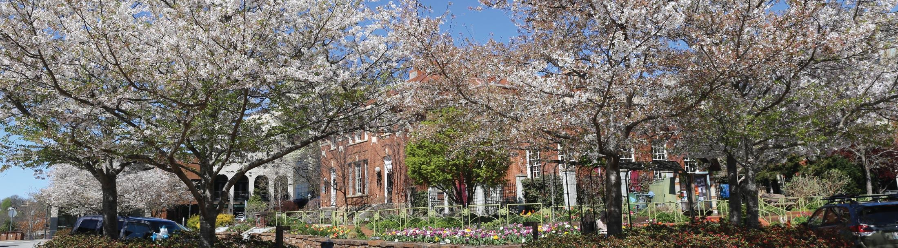

- Springdale, AR
- Springdale is the fourth-largest city in Arkansas, United States. It is located in both Washington and Benton counties in Northwest Arkansas. Located on the Springfield Plateau deep in the Ozark Mountains, Springdale has long been an important industrial city for the region.
- Rogers, AR
- Rogers is a city in Benton County, Arkansas, United States. Located in the Ozarks, it is part of the Northwest Arkansas region, one of the fastest growing metro areas in the country. Rogers was the location of the first Walmart store, whose corporate headquarters is located in neighboring Bentonville.
- Fayetteville, AR 
- Fayetteville is a city in northwest Arkansas. Near the University of Arkansas campus, the Clinton House Museum was the first home of Bill and Hillary Clinton. Vintage and modern airplanes are on display in a hangar at the Arkansas Air and Military Museum. To the west, Prairie Grove Battlefield State Park was the site of a Civil War battle. Mount Sequoyah Woods Trail runs through a thick forest.